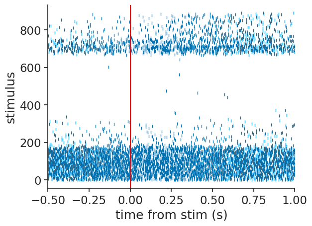
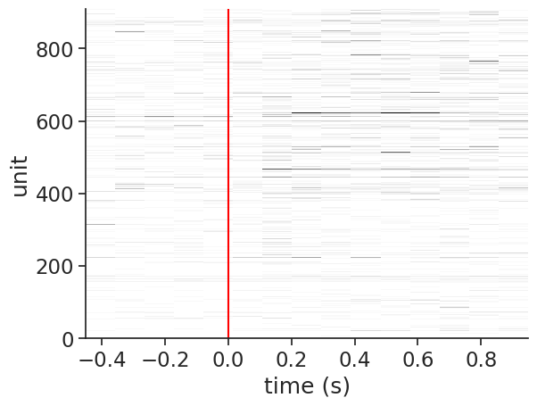
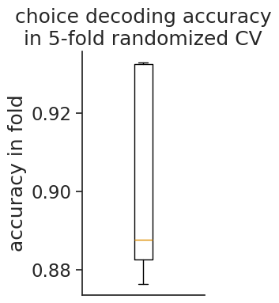

Trial-aligned decoding with International Brain Lab data#
This example works through a basic pipeline for decoding the mouse’s choice from spiking activity in the International Brain Lab’s decision task, including loading the data from DANDI, processing and trial-aligning the neural activity, and fitting a logistic regression with cross-validation using scikit-learn.
The International Brain Lab’s Brain Wide Map dataset is available at Dandiset 00409. The International Brain Lab’s BWM website includes links to their preprint and additional documentation. The IBL also has an excellent decoding demonstration in the COSYNE section of their events webpage under “Tutorial 2: Advanced analysis”, along with many other relevant demos.
For a more detailed tutorial on data loading with DANDI, see the “Streaming data from DANDI” example!
Caveats: This example is meant to provide a simple starting point for working with trial-aligned data and data from the IBL, and so it does not faithfully replicate the IBL’s quality control and filtering criteria; the decoding here is also simpler than the analyses carried out in those works.
Loading data#
See also the “Streaming data from DANDI”, which includes more detail.
# These modules are used for data loading
from dandi.dandiapi import DandiAPIClient
import fsspec
from fsspec.implementations.cached import CachingFileSystem
import h5py
from pynwb import NWBHDF5IO
# The BWM dandiset:
dandiset_id = "000409"
# This is a randomly chosen recording session.
asset_path = "sub-CSH-ZAD-026/sub-CSH-ZAD-026_ses-15763234-d21e-491f-a01b-1238eb96d389_desc-processed_behavior+ecephys.nwb"
with DandiAPIClient() as client:
asset = client.get_dandiset(dandiset_id, "draft").get_asset_by_path(asset_path)
s3_url = asset.get_content_url(follow_redirects=1, strip_query=True)
fs = CachingFileSystem(
fs=fsspec.filesystem("http"),
cache_storage=str(Path("~/.caches/nwb-cache").expanduser()),
)
io = NWBHDF5IO(file=h5py.File(fs.open(s3_url, "rb")), load_namespaces=True)
nwb = nap.NWBFile(io.read())
/home/runner/.local/lib/python3.12/site-packages/hdmf/spec/namespace.py:620: UserWarning: Ignoring the following cached namespace(s) because another version is already loaded:
hdmf-common - cached version: 1.9.0, loaded version: 1.8.0
hdmf-experimental - cached version: 0.6.0, loaded version: 0.5.0
Please update to the latest package versions.
self.warn_for_ignored_namespaces(ignored_namespaces)
This NWB file, loaded into a pynapple object, contains neural activity, behavioral data, and raw electrophysiological traces. They’re lazily loaded, so only what we use will be downloaded.
nwb
15763234-d21e-491f-a01b-1238eb96d389
┍━━━━━━━━━━━━━━━━━━━━━━━━━━━━━━━━━━━━━━┯━━━━━━━━━━━━━┑
│ Keys │ Type │
┝━━━━━━━━━━━━━━━━━━━━━━━━━━━━━━━━━━━━━━┿━━━━━━━━━━━━━┥
│ units │ TsGroup │
│ trials │ IntervalSet │
│ epochs │ IntervalSet │
│ WheelMovementIntervals │ IntervalSet │
│ WheelVelocitySmoothed │ Tsd │
│ WheelPositionSmoothed │ Tsd │
│ WheelPosition │ Tsd │
│ WheelAccelerationSmoothed │ Tsd │
│ RightPupilDiameterSmoothed │ Tsd │
│ RightPupilDiameter │ Tsd │
│ PoseEstimationSeriesTubeTop │ TsdFrame │
│ PoseEstimationSeriesTubeBottom │ TsdFrame │
│ PoseEstimationSeriesRightTongueEnd │ TsdFrame │
│ PoseEstimationSeriesRightPupilTop │ TsdFrame │
│ PoseEstimationSeriesRightPupilRight │ TsdFrame │
│ PoseEstimationSeriesRightPupilLeft │ TsdFrame │
│ PoseEstimationSeriesRightPupilBottom │ TsdFrame │
│ PoseEstimationSeriesRightPaw │ TsdFrame │
│ PoseEstimationSeriesNoseTip │ TsdFrame │
│ PoseEstimationSeriesLeftTongueEnd │ TsdFrame │
│ PoseEstimationSeriesLeftPaw │ TsdFrame │
│ PoseEstimationSeriesTailStart │ TsdFrame │
│ passive_task_replay │ IntervalSet │
│ passive_intervals │ IntervalSet │
│ gabor_table │ IntervalSet │
│ RightCameraMotionEnergy │ Tsd │
│ BodyCameraMotionEnergy │ Tsd │
┕━━━━━━━━━━━━━━━━━━━━━━━━━━━━━━━━━━━━━━┷━━━━━━━━━━━━━┙
The only fields we’ll use here are the neural activity (‘units’) and the trial information (‘trials’).
spikes = nwb['units']
trials = nwb['trials']
spikes
Index rate unit_name noise_cutoff spike_amplitude_std_dB firing_rate max_spike_amplitude_uV spike_count ...
------- -------- ----------- -------------- ------------------------ ------------- ------------------------ ------------- -----
0 0.82357 probe00_0 -0.42 1.36 0.82 562.12 5079 ...
1 10.99946 probe00_1 259.91 1.54 11.0 321.68 67834 ...
2 15.07013 probe00_2 204.26 1.46 15.07 121.67 92938 ...
3 5.16569 probe00_3 148.37 1.24 5.17 135.71 31857 ...
4 25.96824 probe00_4 44.18 1.47 25.97 239.12 160147 ...
5 5.13391 probe00_5 311.32 1.47 5.13 229.67 31661 ...
6 15.9644 probe00_6 242.57 1.38 15.96 227.14 98453 ...
... ... ... ... ... ... ... ... ...
903 2.0428 probe00_903 15.81 1.49 2.04 123.44 12598 ...
904 0.09989 probe00_904 -0.73 1.48 0.1 139.46 616 ...
905 0.16069 probe00_905 -0.85 1.09 0.16 111.41 991 ...
906 0.17091 probe00_906 -1.15 1.43 0.17 82.67 1054 ...
907 0.05351 probe00_907 4.93 1.37 0.05 128.79 330 ...
908 0.05351 probe00_908 -1.5 2.74 0.05 95.75 330 ...
909 0.1041 probe00_909 -0.94 1.11 0.1 164.79 642 ...
trials
index start end quiescence_period gabor_stimulus_onset_time auditory_cue_time wheel_movement_onset_time choice_registration_time feedback_time ...
0 36.78385458 40.007964165 0.46 37.69 37.69 37.92 38.44 38.44 ...
1 40.37566203 43.274770522 0.46 41.39 41.39 41.59 41.71 41.71 ...
2 43.63566933 46.292868485 0.68 44.39 44.39 44.54 44.71 44.71 ...
3 46.66926594 49.190979041 0.61 47.36 47.36 47.51 47.61 47.61 ...
4 49.55207763 55.159877451 0.49 50.11 50.11 53.28 53.59 53.59 ...
5 55.57487529 60.826513102 0.6 56.26 56.26 58.9 59.25 59.25 ...
6 61.19131359 66.742723383 0.62 61.89 61.89 65.03 65.17 65.17 ...
... ... ... ... ... ... ... ... ... ...
887 4665.141205895 4674.910151903 0.43 4665.63 4665.63 4672.21 4672.34 4672.34 ...
888 4675.984954745 4690.743070591 0.68 4676.88 4676.88 4688.64 4689.19 4689.19 ...
889 4691.834669615 4701.794999598 0.61 4693.23 4693.23 4698.98 4699.21 4699.21 ...
890 4702.867999505 4765.977571354 0.53 4703.48 4703.48 nan 4763.48 4763.48 ...
891 4767.122273435 4830.17841857 0.48 4767.68 4767.68 4820.2 4827.68 4827.68 ...
892 4831.334918195 4834.507429035 0.64 4832.02 4832.03 4832.64 4832.96 4832.96 ...
893 4835.563328645 4845.873856126 0.59 4836.19 4836.19 4843.87 4844.31 4844.31 ...
shape: (894, 2), time unit: sec.
Trial alignment and binning#
Here, we start by discarding some trials where a choice wasn’t made (a more complete analysis may include more criteria).
valid_choice = trials.mouse_wheel_choice != "none"
trials = trials[valid_choice]
Now, we can use compute_perievent to align the spikes to the
stimulus onset times.
We will choose a window around each stimulus that extends back 0.5s and forward 1s.
stimulus_onsets = nap.Ts(t=trials.gabor_stimulus_onset_time.values)
window=(-0.5, 1.0)
trial_aligned_spikes = nap.compute_perievent(data=spikes, events=stimulus_onsets, window=window)
The result is a dictionary of TsGroup, one per unit, containing that unit’s spikes relative to the onset time.
We can easily visualize that as follows:
example_unit = 42
plt.plot(trial_aligned_spikes[example_unit].to_tsd(), "|", markersize=5)
plt.xlabel("time from stim (s)")
plt.ylabel("stimulus")
plt.xlim(*window)
plt.axvline(0.0, color="red");

Note
See the perievent user guide for how this works and other visualizations!
We can then bin and count these spikes as follows:
bin_size = 0.1
trial_aligned_binned_spikes = np.stack([trial_aligned_spikes[unit].count(bin_size) for unit in spikes], axis=1)
trial_aligned_binned_spikes.shape
(15, 910, 892)
Let’s visualize the neural activity in a single trial:
example_trial = 42
plt.imshow(
trial_aligned_binned_spikes[:, :, example_trial].values.T,
aspect="auto",
cmap="Grays",
interpolation="none",
extent=(
trial_aligned_binned_spikes.times()[0],
trial_aligned_binned_spikes.times()[-1],
0,
trial_aligned_binned_spikes.shape[1],
),
)
plt.axvline(0, color='red')
plt.ylabel('unit')
plt.xlabel('time (s)');

Decoding choice#
Let’s use scikit-learn to fit a logistic regression. We can use their cross-validation tools to pick the regularization parameter
# process the choice from -1, 1 to 0,1
y = (trials.mouse_wheel_choice == "clockwise").astype(int)
# transpose the data to lead with trial dimension
X = trial_aligned_binned_spikes.swapaxes(0, 2)
# standardize per neuron + trial
X = (X - X.mean(2, keepdims=True)) / X.std(2, keepdims=True).clip(min=1e-6)
# reshape to n_trials x n_features
X = X.reshape(len(X), -1)
# loguniform randomized search CV logistic regression
clf = RandomizedSearchCV(
LogisticRegression(),
param_distributions={'C': scipy.stats.loguniform(1e-3, 1e3)},
random_state=0,
)
clf.fit(X, y);
cv_df = pd.DataFrame(clf.cv_results_)
best_row = cv_df[cv_df.rank_test_score == 1]
best_row = best_row.iloc[best_row.param_C.argmin()]
plt.figure(figsize=(2, 4))
plt.boxplot(best_row[[c for c in best_row.keys() if c.startswith('split')]])
plt.ylabel('accuracy in fold')
plt.xticks([])
plt.title("choice decoding accuracy\nin 5-fold randomized CV");

Authors
Charlie Windolf